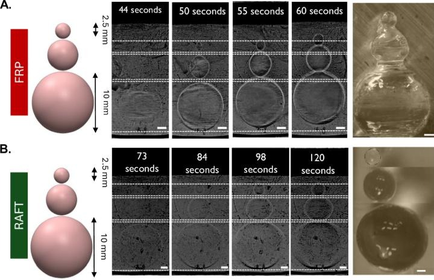
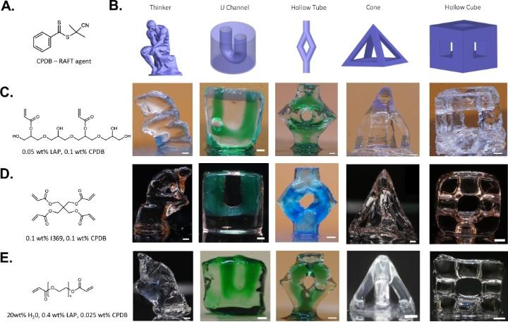

Computed axial lithography forms a whole object at once, so the entire printed volume polymerizes almost simultaneously. With conventional free-radical photopolymerization that is strongly exothermic: the resin can warm by more than 60 °C, triggering auto-acceleration and thermally driven buoyant flow that move the part while it is still soft. Heat release, not optics, then limits fidelity and part size.
In a collaboration with Derek Irvine’s and Ricky Wildman’s groups at the University of Nottingham, we introduced reversible addition–fragmentation chain-transfer (RAFT) polymerization into CAL. By regulating chain growth, RAFT keeps the reaction kinetics steady and suppresses the abrupt viscosity rise of free-radical systems. In-situ thermal monitoring showed a substantially smaller temperature rise, thermally induced buoyancy was suppressed, and geometries that fail with free-radical resins became printable in several (meth)acrylate systems. Because the RAFT end-groups remain active, printed parts can also be chemically functionalized after printing.
The work reframes volumetric printing as a coupled problem in reaction kinetics, heat transport and the mechanics of a gelling solid, and points toward larger, thermally stable volumetric prints.


Banner: infrared thermal images of the print vial. With conventional free-radical resin the peak temperature reaches 49.7 °C after one minute and 70.1 °C after three (left and center); with RAFT it stays at 34.2 °C (right). From Krumins et al. (2026), Fig. 2, CC BY 4.0.
Key publications
[J65] E. Krumins, Y. Sun, L. Jiang, V. Taresco, D.J. Keddie, R.D. Wildman, H. Taylor, and D.J. Irvine, “Enhanced volumetric additive manufacturing via reversible addition–fragmentation chain transfer (RAFT) polymerization,” Nature Communications, vol. 17, 6907, 2026. doi:10.1038/s41467-026-73456-8